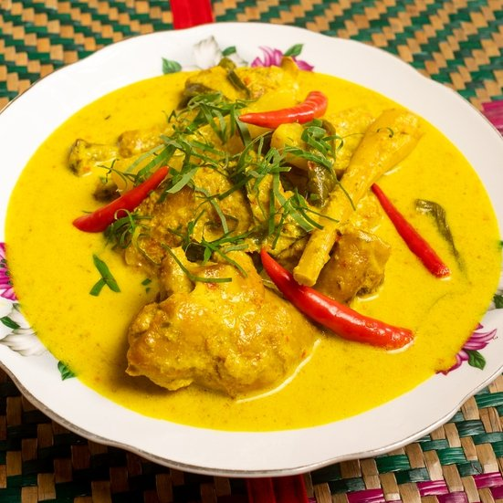
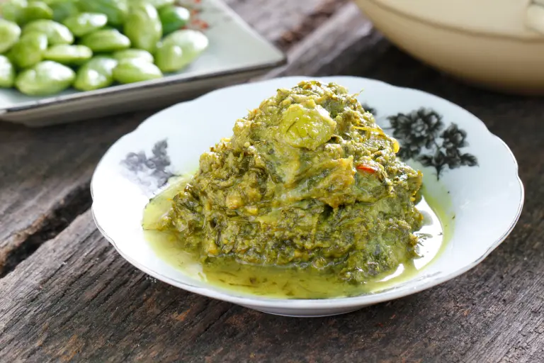
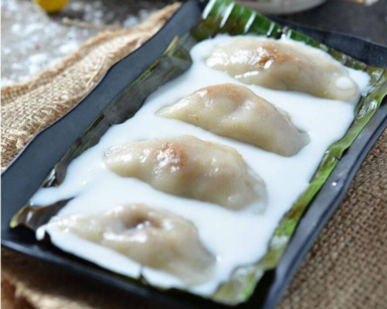
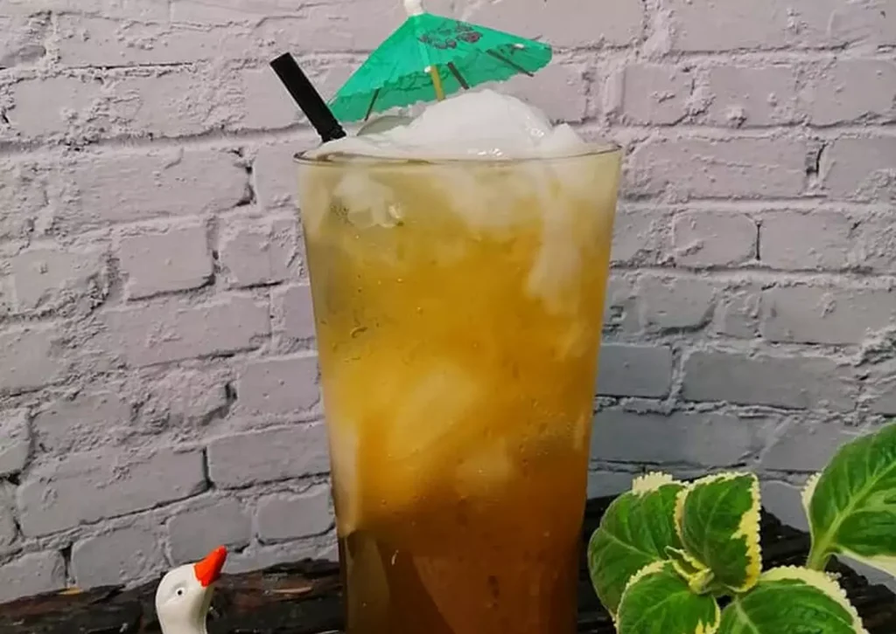
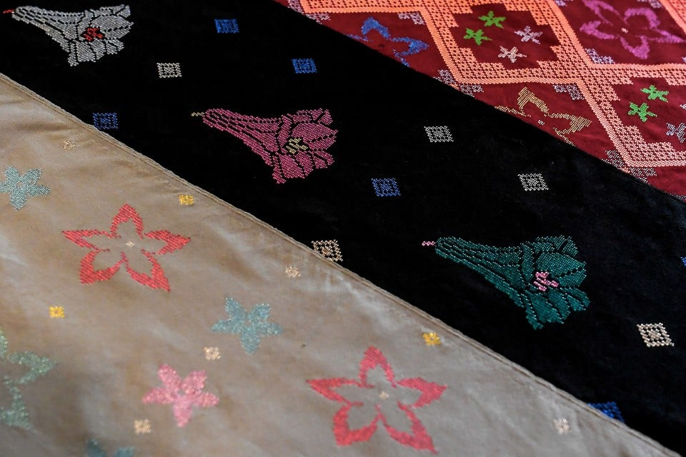
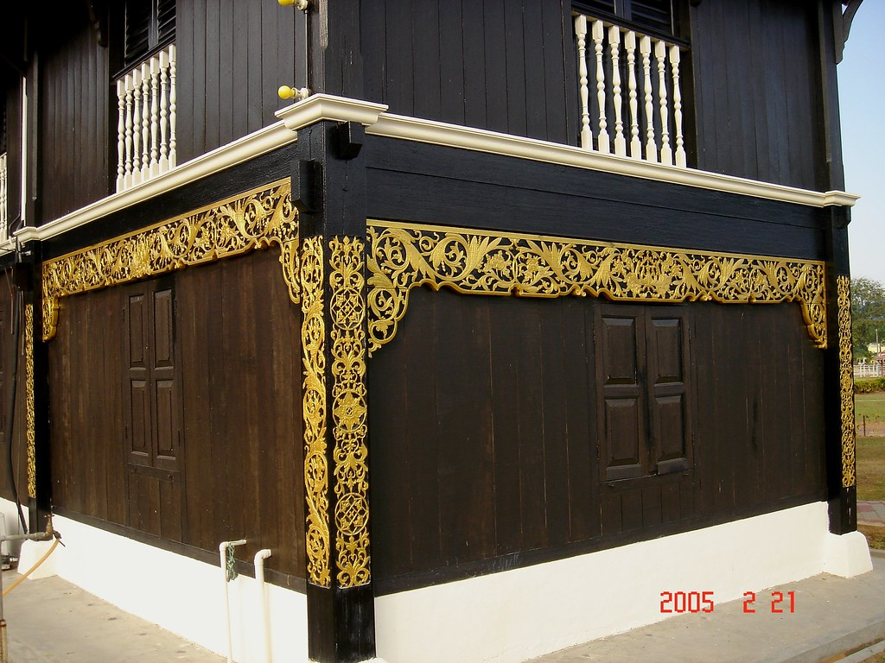
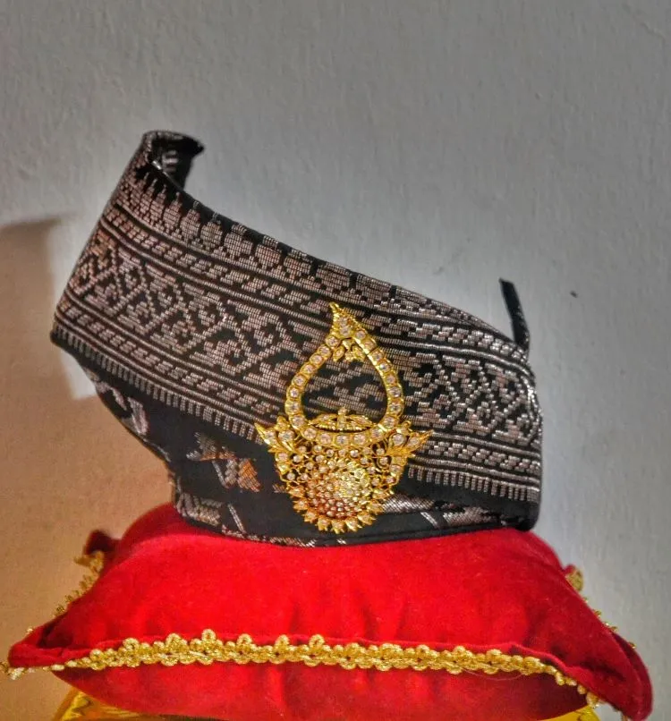
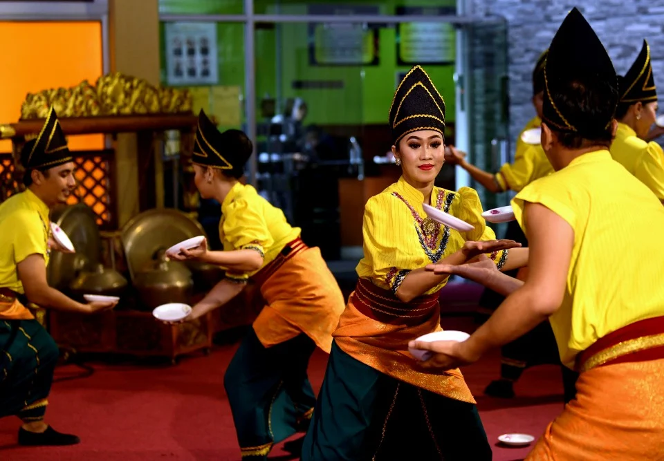
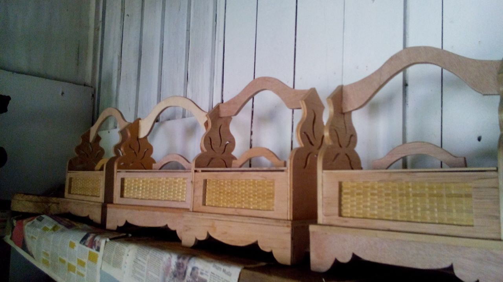

LOCAL FOOD

MASAK LEMAK CILI API
The name “Masak Lemak Cili Api”, which perfectly encapsulates the essence of this dish. It is characterized by its creamy gravy, made from a blend of coconut milk, turmeric, and bird’s eye chili, also known as “Cili Api” in Malay.It is a staple in many Malaysian households, particularly in the Negeri Sembilan region, known for its rich and spicy cuisine.

RENDANG CILI API
Rendang in Negeri Sembilan is different from the rendang cooked in other states because the rendang uses only bird’s eye chili (cili padi) and not dry chili (cili kering). This dish is really delicious and easy to prepare, if you double the spiciness it doubles the taste. It is very suitable if eaten with lemang or ketupat, especially during Eid.

TEMPOYAK DAUN KAYU
Tempoyak daun kayu is a classic Negeri Sembilan dish. It’s also called tempoyak pucuk ubi (cassava shoots), and is often cooked to a thick texture to be enjoyed with white rice. Make sure the shoots and leaves that you use are sliced as thinly as possible for optimum textural experience.

MI LOKA
"Mi loka" traditional Adat Lingkungan desserts in Seri Menanti is a highly favoured dish especially among the elderly, as it is very easy to prepare. All you need is gula enau (palm sugar), sugar, pisang nangka, pandan leaves and coconut milk. It can also be eaten with bread or pulut (steamed glutingus rice).

KUIH SOPANG
Named after the town of Sepang, which is called “Sopang” in the local dialect, Kuih Sopang is a delicate, bite-sized delight. It’s origins trace back to the Minangkabau community, a dominant ethnic group in Negeri Sembilan. Influenced by their ancestral ties from Sumatra, Indonesia, the Minangkabau people brought with them a plethora of unique dishes, and among them, the Kuih Sopang stands out for its delightful taste and texture.

AIR JANDA PULANG
Air Janda Pulang is a coconut drink where the water and meat from the coconut is further sweeten with red sugar or palm sugar, made more fragrant with pandan leaves, and served with ice. It certainly is a sweet tasty drink that is deliciously refreshing especially on a hot sunny day.
LOCAL ART

SONGKET BUNGA LADO
Songket is an intricately woven fabric, often made from silk and decorated with gold or silver thread.The bunga lado represents the uniqueness of Negeri Sembilan, known for its spicy cuisine. The flower has white petals, five stamens, and a stigma, The leaves symbolize the people of the state, the five petals represent the Five Pillars of Islam and the Five Principles of the Nation, the stamens represent the Four Undangs while the stigma represents the Yang Dipertuan Besar (the Ruler).

MINANGKABAU WOOD CARVING
These carvings are often seen in the architecture of traditional homes, including the famous rumah adat (traditional houses) in Seri Menanti. Intricate gold on on black coloured wood carving of one of the 99 pillars of the Sri Menanti Palace. Completed in 1908 this 5 storey wooden building is traditionally built without the use of any nail. This Minang Kabau palace was the official residence for the Royal family until 1931, now it is a museum open to visitors.

TENGKOLOK DENDAM TAK SUDAH
The Tengkolok or Destar Dendam Tak Sudah has five main features, which are the lambaian ibu (or wave of affection), takuk, simpul kasih, pucuk kasih, and gelembung kasih, each carrying its own significance.The Tengkolok Dendam Tak Sudah is the official headgear of the Yang Di-Pertuan Besar of Negeri Sembilan and symbolizes the reigning monarch.

TARIAN PIRING
In Seri Menanti, with strong Minangkabau cultural influences, Tarian Piring is also a popular traditional dance, Tarian Piring is typically performed during cultural celebrations, weddings, and other significant events. The dancers, usually women, balance plates while executing synchronized, graceful, and energetic movements. The dance symbolizes harmony, skill, and the elegance of the Minangkabau tradition.

TEPAK SIRIH
The tepak sirih is used as an ornament and in official ceremonies. It has two parts: the top holds four small containers (cembul) arranged with betel nut (pinang), lime (kapur), gambir, and tobacco (tembakau). The bottom holds cloves (cengkeh), betel leaves (sirih), and a betel cutter (kacip). In a round tepak sirih, the cembul are arranged around the tray in a specific pattern.This arrangement is symbolic and important in ceremonies like weddings and formal events.
